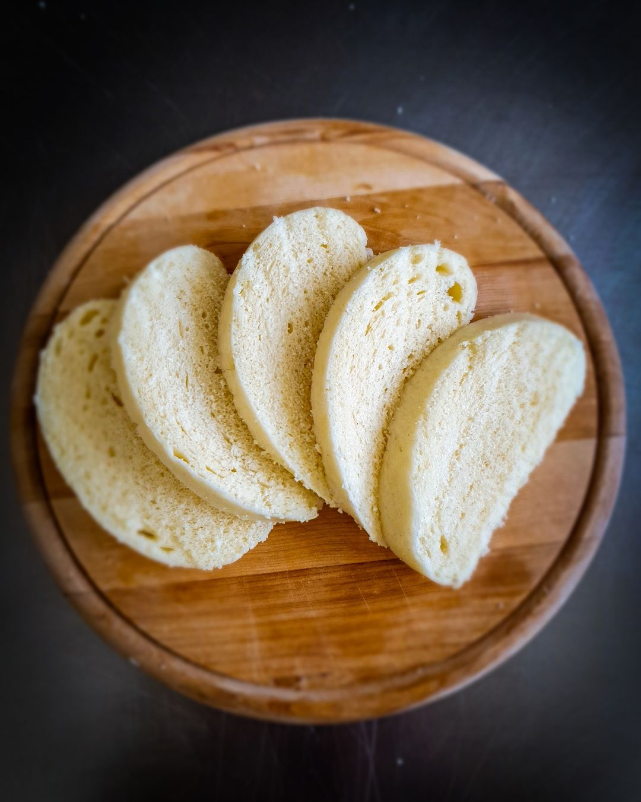

Čím sa vyznačuje náš domáci knedlík?
✅ chutný a mäkkučký
✅ trvanlivý
✅ poctivo vymiešané cesto
✅ stačí si len objednať 😉
Idem víkend, už viete čo si objednáte? 😊
.
.
🏠 Domáce recepty 🥐
🛑 Bez prídavných chemikálií a Éčok ☢️
✅ Vždy čerstvé a trvanlivé výrobky ✅
🚙 Donáška až k vám na adresu 🏠
.
📲 Objednávky tiež na oslavy, stužkové, svadby, plesy, festivaly, zhromaždenia 📱
.
☎️ 0950 891 137☎️
___________
#igerssk #instaslovak #instaslovakia #insta_svk #instaczech #slovakia #slovak #czech #slovensko #igerscz #igersczech #jedlo #pekaren #domace #sisky #kosicecity #kosice #jedlokosice #bistro #urbankosice #sisky #zaviny #ples #svadba #oslava @foodtipskosice